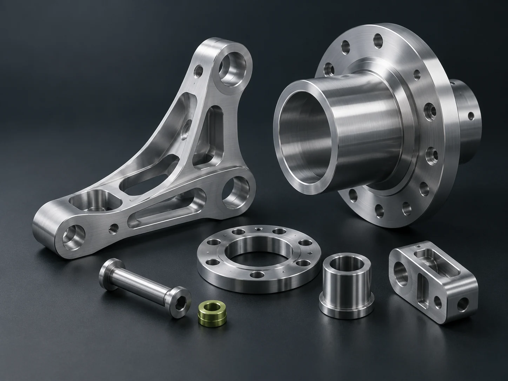

01
CAD & design support
Turn sketches and requirements into clear 3D models, assemblies and technical drawings for discussion and development.
- SolidWorks parts & assemblies
- Drawing updates & tolerancing
- Preliminary bills of materials
MELBOURNE, AUSTRALIA · WORKING ACROSS BORDERS
I’m Canh, a graduate mechanical engineer with a practical mindset and a connection to Vietnam.
From CAD and technical documentation to supplier liaison, I help people and businesses move their projects forward.

01 / HOW I CAN HELP
Support for a defined task, an early-stage idea or the details that need someone’s attention.
Turn sketches and requirements into clear 3D models, assemblies and technical drawings for discussion and development.
Bring structure to the information behind a project, with useful documentation and careful attention to the details.
A point of contact for businesses exploring engineering services, industrial suppliers and manufacturing opportunities in Vietnam.
Investigate an engineering question, compare possible approaches and organise the findings into a useful next step.
THE RIGHT SCOPE, FROM THE START. I take on work suited to my graduate-level experience. Where specialist review, certification or engineering sign-off is needed, we’ll agree that before work begins.
TECHNICAL UNDERSTANDING. HUMAN CONNECTION.
A good supplier conversation starts with a clear brief. I can help connect the technical details with the people who need to understand them.
Let’s discuss what you’re looking forBring together drawings, quantities, specifications and the questions that matter.
Help coordinate enquiries, introductions and technical exchanges with potential suppliers.
Organise responses, track open questions and support the next steps.
02 / SELECTED PROJECTS
Selected university work spanning mechanical design, thermal research and technical documentation.
Exploring passive heat transfer to address ice crystal formation on LPG fuel injector tips.
Developing a stand around panel weight, solar angle and transportability, from early sketches to an assembled CAD design.
Applying Australian Standards to a defined set of operating conditions, with supporting calculations and a detailed 3D model.
03 / A LITTLE ABOUT ME
I’m a Melbourne-based RMIT graduate who enjoys understanding how things work - and helping people make them work better.
I completed my Bachelor of Engineering (Mechanical Engineering) (Honours) in 2025, graduating with Honours 2A. My studies gave me a grounding in mechanical design, engineering analysis and clear technical documentation.
Outside engineering, volunteering at Dynamite Muay Thai has strengthened how I communicate, teach and work with people from different backgrounds. I bring that same patience and practical approach to a technical brief or a supplier conversation.
RMIT University · 2022–2025
Models, drawings, data & documentation
04 / LET’S WORK TOGETHER
Tell me what you need, where you’re up to and the outcome you’re looking for. We can work out a sensible scope and next step.
Small assignments, project support and ongoing collaboration enquiries are welcome.